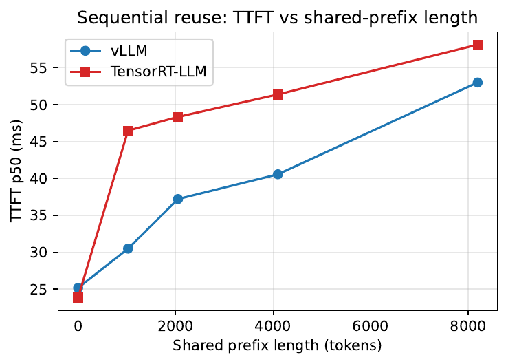
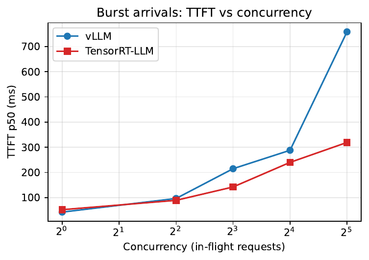
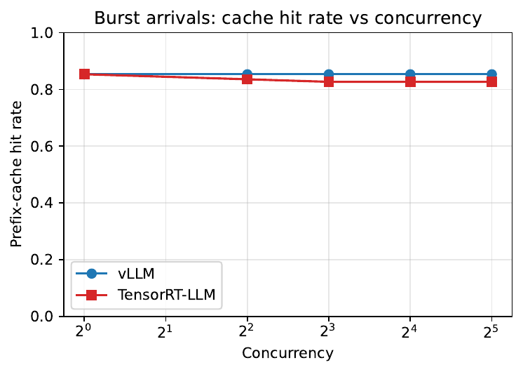
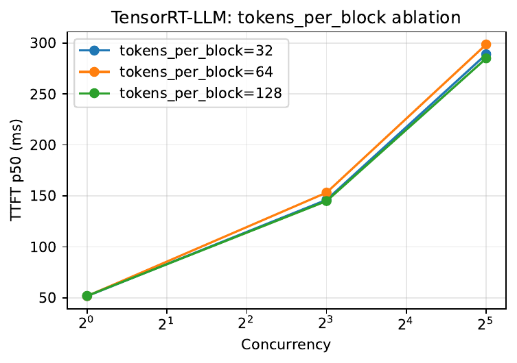

Repeated prompt prefixes are everywhere in serving, and both vLLM and TensorRT-LLM can reuse their KV-cache state — but nobody had mapped when that reuse actually pays on an H100. PrefixBench-H100 does exactly that: matched-condition sweeps showing reuse cuts energy per request by roughly a quarter while holding 83-85% hit rates, until cache pressure erodes the gains. Concurrency and output length barely move cache effectiveness; whatever differs between runtimes lives above the cache, in scheduling.
Prefix reuse mechanisms exist in every modern serving runtime, yet operators cannot tell when reuse materially helps and when scheduling, granularity, concurrency or memory pressure cancel it. This paper refuses to propose another caching algorithm and instead characterizes the operating envelope on current hardware.
One NVIDIA H100, two runtimes under matched workloads, controlled synthetic traces plus chat-style and retrieval-style traffic. Swept axes cover shared-prefix length, suffix diversity, arrival pattern, concurrency, output length and cache configuration; collected metrics span TTFT, inter-token and end-to-end latency, throughput, hit statistics, GPU memory and power.
The headline energy table makes the win concrete at 8192-token prefixes: vLLM with reuse draws 259.2W over 52s per request batch versus 285.9W over 62s without, compounding to 24-31% less energy per request; TensorRT-LLM shows the same shape at 20-24%. Hit rates stay glued at 83-85% across a 32x concurrency range.
Two boundaries: cache pressure under model-scale KV shrinkage erodes the lead, and a TTFT-leadership flip between runtimes survives cross-model verification. Cache effectiveness itself barely responds to concurrency or output length, which pins the remaining cross-runtime differences on the scheduling layer above the cache.




Source table · Average GPU power and energy per request at pl=8192, c=1, 40 requests. Reuse del (2 rows)
| TRT-LLM, reuse on | 238.3\,W | \,67\,s | 399\,J |
|---|---|---|---|
| TRT-LLM, reuse off | 261.2\,W | \,76\,s | 496\,J |
| [gray]0.95 TRT-LLM savings | 8.8\,% | 12\,% | 20--24\,% |
Abstract
Repeated prompt prefixes are increasingly common in LLM serving workloads, appearing in system prompts, templated retrieval-augmented generation pipelines, agent frameworks, and multi-turn conversations. Modern inference runtimes such as vLLM and TensorRT-LLM provide mechanisms for reusing previously computed KV-cache state across requests, yet it remains unclear when prefix reuse materially improves serving performance on contemporary accelerators and when its benefits are limited by scheduling, cache granularity, concurrency, or memory pressure. This paper presents PrefixBench-H100, a reproducible benchmark and measurement framework for characterizing prefix reuse on a single NVIDIA H100. PrefixBench-H100 combines controlled synthetic traces with chat-style and retrieval-style workloads, and evaluates two widely used LLM serving runtimes under matched workload conditions. The benchmark varies shared-prefix length, suffix diversity, request arrival pattern, concurrency, output length, and cache configuration, while collecting time-to-first-token, inter-token latency, end-to-end latency, throughput, cache-hit statistics, GPU memory usage, and selected profiling traces. The goal of PrefixBench-H100 is not to introduce a new caching algorithm, but to expose the practical operating envelope of prefix reuse for H100-class LLM serving. The study identifies the regime where prefix reuse provides substantial first-token latency reductions and the regime where cache pressure erodes them, while showing that cache effectiveness itself is largely insensitive to concurrency and output length; the cross-runtime differences that remain arise above the cache, in the scheduling layer.